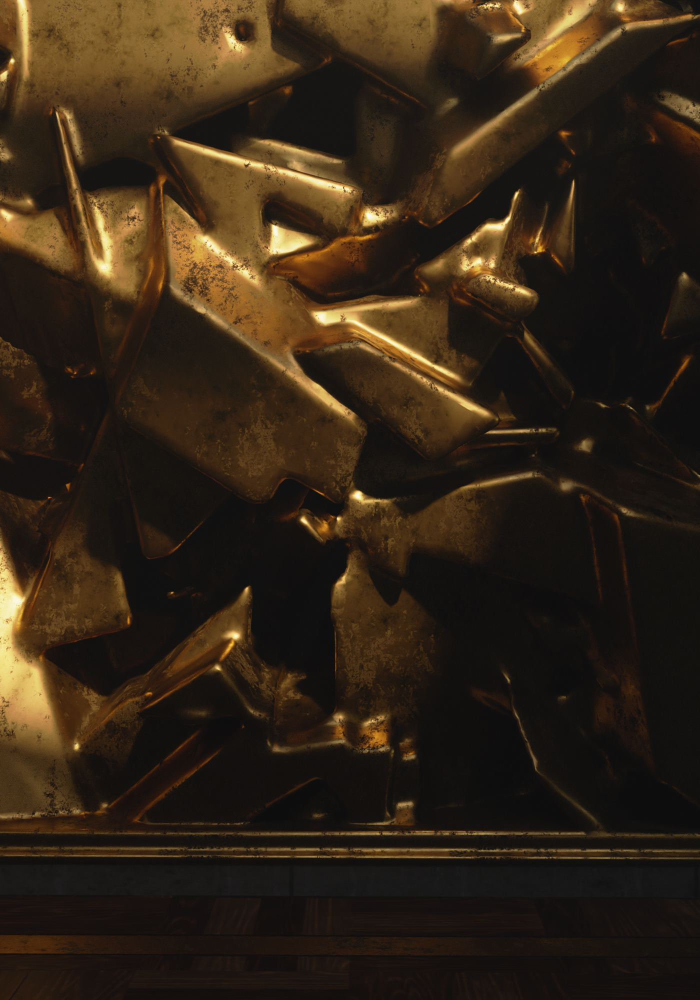
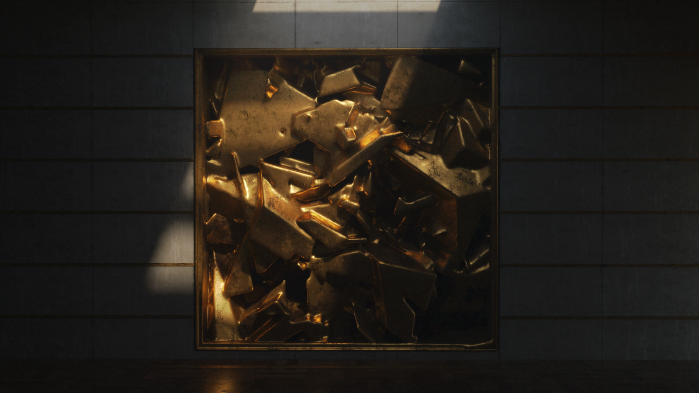
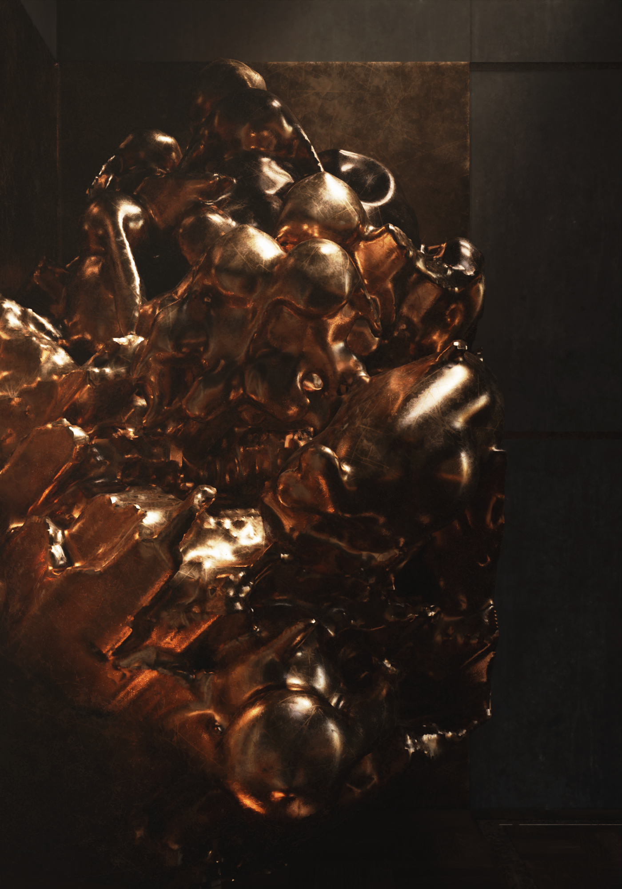
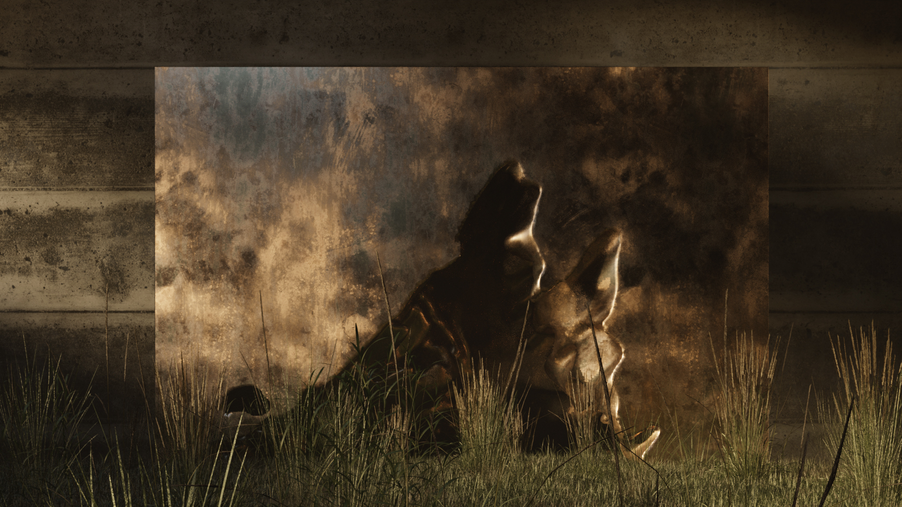
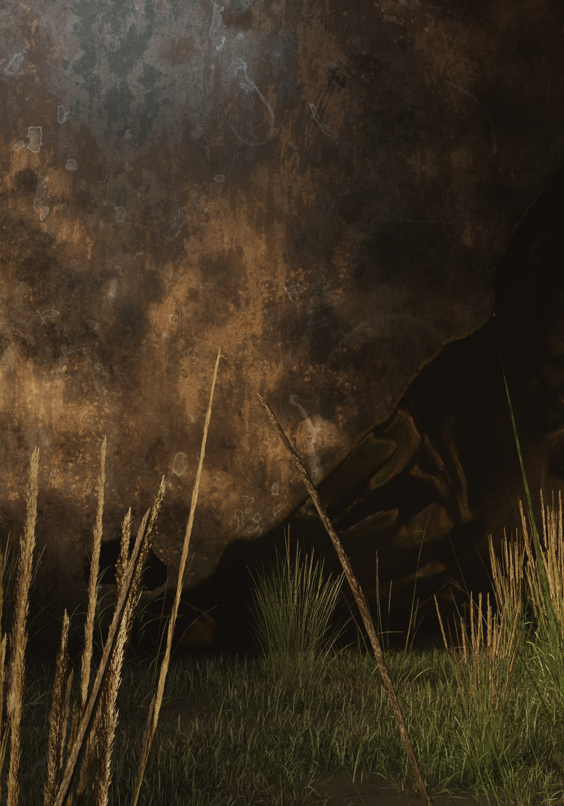

This experience is designed for desktop. Visit us on a larger screen.
Bronze has always been the material of permanence — of monuments, of victory, of gods cast in metal so they might outlast the people who worshipped them. This project begins with a simple inversion: what if bronze were not the vessel of memory, but the evidence of its failure?
These forms are not sculpted. They are collapsed — compressed, molten, folded in on themselves as though history itself had been crushed into a single mass and left to cool in the dark.


Each piece occupies a territory between intention and accident. The bronze appears to have been poured, pressurised, and arrested mid-collapse — a violence frozen at the instant before resolution. The forms bulge and fracture, catching light the way molten metal catches heat: unevenly, dangerously, beautifully.
These are not objects to be understood. They are objects to be felt — their weight implied, their temperature sensed, their history illegible but present.


The pieces are displayed in spaces stripped to their essentials — blackened steel walls, herringbone timber floors, and a single shaft of light from above. The architecture does not frame the work. It withdraws from it. The room becomes a void, and the bronze becomes the only source of warmth.
This is deliberate. The gallery is not neutral — it is cold, austere, industrial. Against this absence, the bronze radiates. It becomes the only living thing in the room.


Outside the gallery, the same forms sit in tall grass against weathered concrete — as though the institution that housed them has long since crumbled and the sculptures have simply remained. The bronze patina deepens in open air. Rain marks it. Moss will follow.
Here, the work completes its argument: monuments are not permanent. They only outlast us by a little. Eventually, the grass reclaims everything — even the things we made to be remembered by.